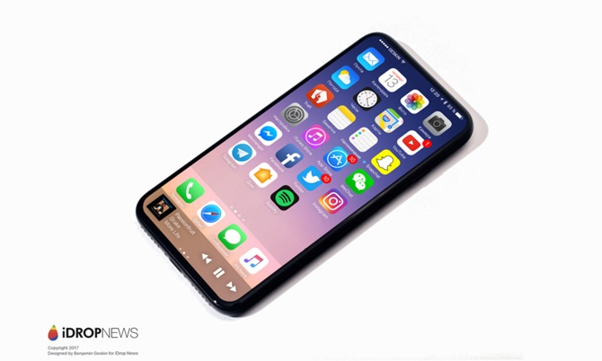
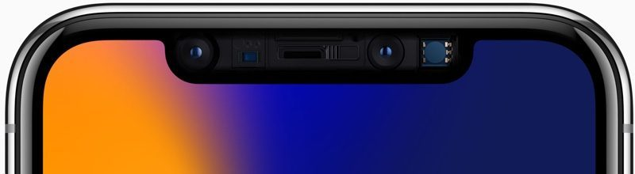

Main Page
Mobile
Iphone X

Our vision has always been to create an iPhone that is entirely screen.
One so immersive the device itself disappears into the experience. And
so intelligent it can respond to a tap, your voice and even a glance.
With iPhone X, that vision is now a reality. Say hello to the future.
True Depth Camera
A tiny space houses some of the most sophisticated technology we've
ever developed, including the cameras and sensors that enable Face ID.

All New Design
The most durable glass ever in a smartphone, front and back.
Surgical-grade stainless steel. Wireless charging.Water and dust resistance.
Animoji
The TrueDepth camera analyzes more than 50 different muscle
movements to mirror your expressions in 12 Animoji. Reveal your
inner panda, pig or robot.
The iPhone X, pronounced "iPhone 10," was introduced at Apple's September 2017 event as a classic "One more thing..." addition to the iPhone 8 and 8
Plus product lineup. According to Apple, the iPhone X represents the biggest technological leap forward since the original iPhone was introduced 10 years
ago in 2007, and it sets the path for the next decade of iPhone development.
Apple's aim with the iPhone X was to create an iPhone that's all display, blurring the line between physical object and experience. The 5.8-inch front
screen melts into a highly polished curved-edge stainless steel band encircling a durable all-glass body available in two pearlescent finishes: Space
Gray and Silver. Both feature a black front panel.
The edge-to-edge top-to-bottom Super Retina display adopts OLED technology for true-to-life colors, deep blacks, and a million-to-one contrast ratio.
It features a 2436 x 1125 resolution and 458 pixels per inch, the highest resolution and pixel density ever introduced in an iPhone. It supports HDR,
wide color, 3D Touch, and True Tone for adjusting the white balance of the display to match the ambient lighting.
At 5.8 inches diagonally, the iPhone X has the largest display introduced in an iPhone yet, but with no bezels aside from a notch housing the camera
and sensors, it fits comfortably in the hand. At 143.6mm tall by 70.9mm wide by 7.7mm deep, it's not much bigger than an iPhone 8, and it's smaller than
an iPhone 8 Plus.
The glass body of the device is IP67 water and dust resistant and it enables support for inductive wireless charging for the first time. The iPhone X
adopts the Qi wireless standard and can charge through the glass back using any Qi-certified charging accessory. Apple is making an "AirPower" accessory
to charge iPhone X, Apple Watch Series 3, and AirPods simultaneously, but it won't be out until later in 2018.
With an edge-to-edge design, there is no room for a Home button, so the iPhone X adopts a new user experience. A swipe up at the bottom of the screen brings
up the Home screen, while a swipe and a hold brings up App Switcher. There's a Tap to Wake feature for looking at notifications, the side button can be pressed
and held to activate Siri, and the Control Center is accessed by swiping downwards from the top status bar.